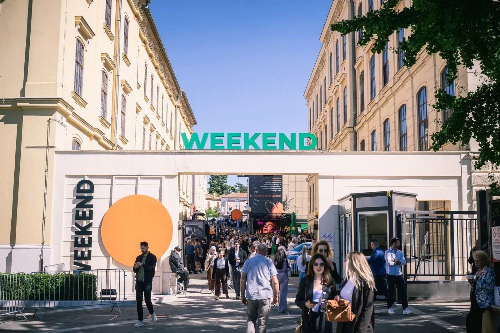

Festivals · Culture
Weekend Media Festival 2027 (Weekend.20)
- Dates
- –
- Venue
- The Old Tobacco Factory (TDR), Rovinj
- Location
- Rovinj, Croatia
- Format
- In-person
- Category
- Culture
- Industry
- Media and ideas festival
- Organiser
- Pepermint d.o.o.
- Official website
- https://weekend.hr/en
About
20th edition, officially presented as eight festivals under one Weekend, including Tech.Weekend and Education.Weekend as well as Finance.Weekend and Investment.Weekend. Included as a culture/media festival (finance is a subset of tracks, not the whole event). Official copy also names Grand Park Hotel Rovinj for some Health and Energy sessions; the main pin is the Old Tobacco Factory, described as 30,000 m² of events. Dates are local to the host city (Central European Time, UTC+1 / UTC+2 in summer).
Topics: media, tech, culture, education.
No organiser attendance figure found on the official pages fetched 24 Nov 2026. Ranked by our estimated size tier 'medium' (10,000-30,000 attendees/visits), a judgement from format, venue and scale, not an official number.
Sources
- Official — https://weekend.hr/en